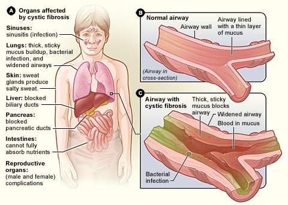

Cystic fibrosis

SYMPTOMS:
Respiratory signs and symptoms
The thick and sticky mucus associated with cystic fibrosis clogs the tubes that carry air in and out of your lungs. This can cause signs and symptoms such as:
- A persistent cough that produces thick mucus (sputum)
-
Wheezing
-
Exercise intolerance
-
Repeated lung infections
-
Inflamed nasal passages or a stuffy nose
-
Recurrent sinusitis
Digestive signs and symptoms
The thick mucus can also block tubes that carry digestive enzymes from your pancreas to your small intestine. Without these digestive enzymes, your intestines aren't able to completely absorb the nutrients in the food you eat. The result is often:
- Foul-smelling, greasy stools
-
Poor weight gain and growth
-
Intestinal blockage, particularly in newborns (meconium ileus)
-
Chronic or severe constipation, which may include frequent straining while trying to pass stool, eventually causing part of the rectum to protrude outside the anus (rectal prolapse)
The thick and sticky mucus associated with cystic fibrosis clogs the tubes that carry air in and out of your lungs. This can cause signs and symptoms such as:
- A persistent cough that produces thick mucus (sputum)
-
Wheezing
-
Exercise intolerance
-
Repeated lung infections
-
Inflamed nasal passages or a stuffy nose
-
Recurrent sinusitis
CAUSES
- In cystic fibrosis, a defect (mutation) in a gene — the cystic fibrosis transmembrane conductance regulator (CFTR) gene — changes a protein that regulates the movement of salt in and out of cells. The result is thick, sticky mucus in the respiratory, digestive and reproductive systems, as well as increased salt in sweat.
-
Many different defects can occur in the gene. The type of gene mutation is associated with the severity of the condition.
-
Children need to inherit one copy of the gene from each parent in order to have the disease. If children inherit only one copy, they won't develop cystic fibrosis. However, they will be carriers and could pass the gene to their own children.
DIAGNOSIS:
Newborn screening and diagnosis
- Every state in the U.S. now routinely screens newborns for cystic fibrosis. Early diagnosis means that treatment can begin immediately.
-
In one screening test, a blood sample is checked for higher than normal levels of a chemical called immunoreactive trypsinogen (IRT), which is released by the pancreas. A newborn's IRT levels may be high because of premature birth or a stressful delivery. For that reason, other tests may be needed to confirm a diagnosis of cystic fibrosis.
-
To evaluate if an infant has cystic fibrosis, doctors may also conduct a sweat test once the infant is at least 2 weeks old. A sweat-producing chemical is applied to a small area of skin. Then the sweat is collected to test it and see if it's saltier than normal. Testing done at a care center accredited by the Cystic Fibrosis Foundation helps ensure reliable results.
-
Doctors may also recommend genetic tests for specific defects on the gene responsible for cystic fibrosis. Genetic tests may be used in addition to checking the IRT levels to confirm the diagnosis.
Testing of older children and adults
- Cystic fibrosis tests may be recommended for older children and adults who weren't screened at birth. Your doctor may suggest genetic and sweat tests for CF if you have recurring bouts of an inflamed pancreas, nasal polyps, chronic sinus or lung infections, bronchiectasis, or male infertility.
TREATMENT
The goals of treatment include:
- Preventing and controlling infections that occur in the lungs
-
Removing and loosening mucus from the lungs
-
Treating and preventing intestinal blockage
-
Providing adequate nutrition